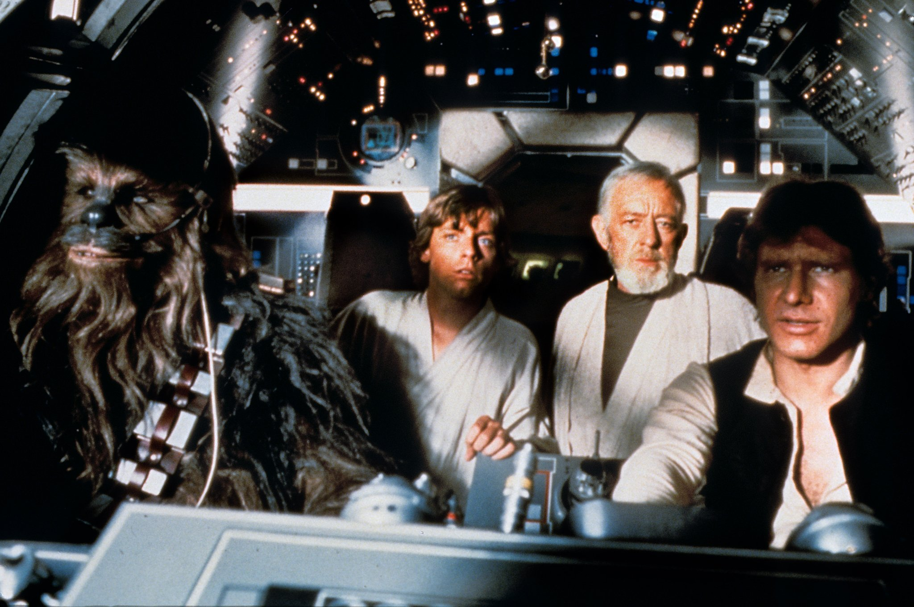

Favorite Movie Franchise
STAR WARS
This movie franchise was first introduced to me when I was in 3rd grade, and after that year I "grew out of it". I then actually started to hate, but that all changed after The Force Awakens released in theaters. My family started discussing if we should go watch, and before we went my dad suggested that we watch all the movies before going on. So we did, and ever since then my love for Star Wars returned.
Favorite Music Genre
Rock(Classic Rock)
The music genre that played all throughout the house as I was a child, besides Frank Sinatra. It is the one music genre that I would choose over any other. The picture above is a picture of me at a concert for the band U2. This was my first and only time going to a concert and it was amazing.
Favorite Super-Hero

SPIDER-MAN
The one superhero that always seemed to come back to me. Ever since I was a kid, I loved Spider-man. As like many kids did, I dressed up as Spider-man for Halloween and I always had a blast. Now that that is behind me, the next step is to watch the movies and play the games. The picture above is a picture taken from his latest game on the PS4.
Favorite Sports Team
LA Lakers
The team that has been pushed on me since I was a baby, and even before that. When my parents were still trying to name me, my mom's boss suggested the name Sha-kobe due to my Dad's love for the Lakers. It's the one team that we cheered for, even when they lost badly(Basically every game the past few years). We always went to go so at least two games per season and I loved going to the Staples Center to watch the Lakers.
Follow Me
Instagram: nick_a.2187
Snapchat: nick_a2187
Xbox: mez2187
PS4: Mez0709
Fun Facts
- My friends think I look like Aladdin
- I am actually Mexican NOT Phillipino
- My first video game console was the original Xbox
- You would've HATED me if you knew me as a kid (Unless your Ryan Macias, who experienced my stupid young self)
- I was obsessed with Sonic the Hedgehog for about 8 years